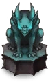
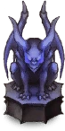
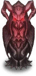
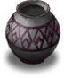
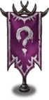
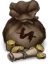

Evil Castle
Overview
Evil Castle - PvE mode, offering both single-time and repetitive content.
Unlock Requirement
Clear Story Pack 4 "Cat Daddy" (Normal Diffuculty).
Evil Castle Consists of 5 Towers:
| Tower of Pride | Tower of Desire | Tower of Salvation | Tower of Wrath | Tower of Jealousy |
{kind=link}
 Tower of Pride
Tower of Pride
Tower of Pride is a unique Tower, offering daily rewards based on your score.
- Height: 6 floors
- Enemy Property: Enemies share one Property each floor.
- Note: Enemies do not have Light property completely.
- Each floor consists of 4 Normal Battles and 1 Boss Battle. You cannot do a Boss Battle until you have cleared the rest.
Tower of Pride Scoring System ( [ + Score ] — Boss Values )
- Entile at least 4 character(s) with Fire prorerty: +2000 [+4000]
- Win the battle within 1 turns or less: +1500 [+3000]
- Win the battle within 3 turns or less: +1000 [+2000]
- Win the battle within 5 turns or less: +500 [+1000]
- Entile at least 4 character(s) with Light prorerty: +2000 [+4000]
- Win the battle within 1 turns or less: +1500 [+3000]
- Win the battle within 3 turns or less: +1000 [+2000]
- Win the battle within 5 turns or less: +500 [+1000]
- Entile at least 4 character(s) with Water prorerty: +2000 [+4000]
- Win the battle within 1 turns or less: +1500 [+3000]
- Win the battle within 3 turns or less: +1000 [+2000]
- Win the battle within 5 turns or less: +500 [+1000]
- Entile at least 4 character(s) with Light prorerty: +2000 [+4000]
- Win the battle within 1 turns or less: +1500 [+3000]
- Win the battle within 3 turns or less: +1000 [+2000]
- Win the battle within 5 turns or less: +500 [+1000]
- Entile at least 3 character(s) with Wind prorerty: +2000 [+4000]
- Win the battle within 1 turns or less: +1500 [+3000]
- Win the battle within 3 turns or less: +1000 [+2000]
- Win the battle within 5 turns or less: +500 [+1000]
- Entile at least 2 character(s) with Light prorerty: +1750 [+3500]
- Entile at least 2 character(s) with Darkness prorerty: +1750 [+3500]
- Win the battle within 3 turns or less: +1000 [+2000]
- Win the battle within 5 turns or less: +500 [+1000]
IMPORTANT
Except tasks above, there are also so called Evaluation points.
To get maximum of those, you need to:
- Deal 1,000,000 Damage by a single unit in a single turn
- Complete the fight in 1 turn
- Have your current team with maximum (healed) HP
Total Score Points
- Regular fight: 15,000 points
- Boss fight: 40,000 points
- Total: 15,000 \(\times\) 4 + 40,000 = 100,000 points per floor
Newbie Advices
1. It is important to complete tower at least once to start gaining resources for crafting gear.
2. Do NOT chase fulfilling property requirenment as very new player.
While it is important to have as best score as possible, that task isn't as benefial and requires a lot of investment in DPS and supports you may not have.
Intstead, exploit free points from full HP and try to deal 1m damage with single-hit costumes such as Dream Bride Eclipse. Using your general team is enough for the start.
Do I need to fight it daily to obtain rewards?
No. Game mode offers both one-time clear and daily rewards. For obtaining daily ones, go to any pack except Golden Colosseum and Glupy Diner and interact with pet following you.
Image Guide
{kind=link}
Tower of Pride Rewards
- 6th Floor: 1,000
 , 10
, 10 
- 5th Floor: 1,000 , 10
- 4th Floor: 1,000 , 10
- 3rd Floor: 1,000 , 10
- 2nd Floor: 1,000 , 10
- 1st Floor: 1,000 , 10
- 600,000 points: 900 , 9
- 500,000 points: 800 , 8
- 400,000 points: 750 , 8
- 300,000 points: 700 , 7
- 200,000 points: 650 , 7
- 150,000 points: 600 , 7
- 100,000 points: 550 , 6
- 50,000 points: 500 , 6
- 10,000 points: 300 , 6
{kind=link}
{kind=link}
{kind=link}
{kind=link}
 Tower of Desire
Tower of Desire
Often considered to be a general content (until Floor 151+).
- Height: 200 floors
- Enemy Property: Enemies share one Property for 10 floors, then it changes.
- Progression: To advance, you just need to win the battle. Completing the 2 optional challenges per floor grants extra resources.
Who to use for this tower?
- You can use your general (Story) team until Floor 151.
Having correct Property is adviced but not necessarily needed. - Starting from Floor 151, you must utilize Property damage bonus, meaning you need to use Diana and correct DPS for each stage.
You can experiment on your own or refer to Seji's Video Guide.
Tower of Desire Rewards
- Each 10th Floor: 1
 , 150
, 150  , 10
, 10 - Each 5th Floor: 1 , 100 , 5
- Rest Floors: 1 , 30 000
 , 5
, 5 
{kind=link}
{kind=link}
 Tower of Salvation
Tower of Salvation
Tower of Salvation is a seasonal roguelike gamemode where you climb Floors of the Tower in order to obtain resources.
- Unlock Requirenment: Clear Story Pack 9 "Iron Mask" (Normal Diffuculty).
- Levels: 10 Difficulties [ 10-30 floors each ]
- Season Duration: 4 weeks with settlement period on last day (starting at 15:00 UTC).
- Daily attempts: 3
 per day.
per day.
Before starting your run, you're allowed to choose a difficulty and purchase some upgrades.
Difficulty decide how hard it will be to climb the Tower, while upgrades ease the process but require from you  Night World Obsidian, earned in your other runs.
Night World Obsidian, earned in your other runs.
Difficulty info
- Target Floor: 10F
- Lost Silver at Start: 30000
- Silver Acquired After Battle Victory: 100%
- Enemy HP Ratio: 100%
- Enemy ATK, Magic ATK Ratio: 100%
- SP at Start of Battle: 20
- SP Recovery per Turn: 5
- Item Discount Probability: 25%
- Target Floor: 10F
- Lost Silver at Start: 26000 (-4000)
- Silver Acquired After Battle Victory: 100%
- Enemy HP Ratio: 150% (+50%)
- Enemy ATK, Magic ATK Ratio: 125% (+25%)
- SP at Start of Battle: 18 (-2)
- SP Recovery per Turn: 3 (-2)
- Item Discount Probability: 20% (-5%)
- Target Floor: 20F (+10F)
- Lost Silver at Start: 22000 (-8000)
- Silver Acquired After Battle Victory: 100%
- Enemy HP Ratio: 250% (+150%)
- Enemy ATK, Magic ATK Ratio: 150% (+50%)
- SP at Start of Battle: 16 (-4)
- SP Recovery per Turn: 2 (-3)
- Item Discount Probability: 20% (-5%)
- Target Floor: 20F (+10F)
- Lost Silver at Start: 18000 (-12000)
- Silver Acquired After Battle Victory: 90% (-10%)
- Enemy HP Ratio: 500% (+400%)
- Enemy ATK, Magic ATK Ratio: 200% (+100%)
- SP at Start of Battle: 15 (-5)
- SP Recovery per Turn: 1 (-4)
- Item Discount Probability: 15% (-10%)
- Target Floor: 30F (+20F)
- Lost Silver at Start: 14000 (-16000)
- Silver Acquired After Battle Victory: 90% (-10%)
- Enemy HP Ratio: 700% (+600%)
- Enemy ATK, Magic ATK Ratio: 300% (+200%)
- SP at Start of Battle: 14 (-6)
- SP Recovery per Turn: 1 (-4)
- Item Discount Probability: 15% (-10%)
- Target Floor: 30F (+20F)
- Lost Silver at Start: 10000 (-20000)
- Silver Acquired After Battle Victory: 80% (-20%)
- Enemy HP Ratio: 1000% (+900%)
- Enemy ATK, Magic ATK Ratio: 400% (+300%)
- SP at Start of Battle: 13 (-7)
- SP Recovery per Turn: 0 (-5)
- Item Discount Probability: 10% (-15%)
- Target Floor: 30F (+20F)
- Lost Silver at Start: 10000 (-20000)
- Silver Acquired After Battle Victory: 80% (-20%)
- Enemy HP Ratio: 1500% (+1400%)
- Enemy ATK, Magic ATK Ratio: 500% (+400%)
- SP at Start of Battle: 12 (-8)
- SP Recovery per Turn: 0 (-5)
- Item Discount Probability: 10% (-15%)
- Target Floor: 30F (+20F)
- Lost Silver at Start: 10000 (-20000)
- Silver Acquired After Battle Victory: 80% (-20%)
- Enemy HP Ratio: 2400% (+2300%)
- Enemy ATK, Magic ATK Ratio: 600% (+500%)
- SP at Start of Battle: 11 (-9)
- SP Recovery per Turn: 0 (-5)
- Item Discount Probability: 5% (-20%)
- Target Floor: 30F (+20F)
- Lost Silver at Start: 10000 (-20000)
- Silver Acquired After Battle Victory: 80% (-20%)
- Enemy HP Ratio: 3600% (+3500%)
- Enemy ATK, Magic ATK Ratio: 700% (+600%)
- SP at Start of Battle: 11 (-9)
- SP Recovery per Turn: 0 (-5)
- Item Discount Probability: 5% (-20%)
- Target Floor: 30F (+20F)
- Lost Silver at Start: 10000 (-20000)
- Silver Acquired After Battle Victory: 70% (-30%)
- Enemy HP Ratio: 5000% (+4900%)
- Enemy ATK, Magic ATK Ratio: 800% (+700%)
- SP at Start of Battle: 10 (-10)
- SP Recovery per Turn: 0 (-5)
- Item Discount Probability: 0% (-25%)
What upgrades do I buy with  Obsidian?
Obsidian?
Prioritize Refresh Attempts Up, Starting SP Up, followed by Discount Probability Up and ATK/MATK, depending on the team you usually run. Rest is optional and / or not needed.
Image of Upgrade Menu
{kind=link}
At the start of your run, you have to draft a team. To do that, you need to pick 1 of 4 offered costumes for each slot. If you do not like the choice and have rerolls available, you can Refresh the offered costumes.
Image of Normal Selection screen
{kind=link}
As for the fifth pick, you're allowed to take almost every costume from the game as Wildcard Selection, except collab characters you do not own.
Image of Wildcard Selection screen
{kind=link}
How to properly pick your Wildcard
- First, you need to understand what type of team you gathered. If you picked full
 Magical damage type of team, there is very little sense to switch to
Magical damage type of team, there is very little sense to switch to  Physical type.
Physical type. - Second, you need to balance the team. If you picked good supports, try consider picking DPS and vice versa.
There may be rare cases where you get both supports and DPS in first 4 picks. Then you can decide to bring in Utility costume or adding extra Support/DPS.
Some rules about  costumes
costumes
- Owned costumes in your account copy their dupes count (+0 ~ +5), Potential Liberation and Engraving & Awakening.
- Costumes DO NOT copy their gear equipped.
- Brown Dust II Exclusive costumes can appear in both Normal and Wildcard Selections. As mentioned earlier, collab costumes cannot appear / be chosen unless you own them.
-
In following Normal Selections,
- First 2 choices for costumes is from your already owned characters, unless you obtained all possible costumes for characters
(for example, having Angel of Destruction Teresse can give you Beachside Angel or Medical Club costumes in first two slots). - Last 2 choices are always new (for example, you will never see Teresse from those, as soon as you obtained any of her costumes).
That means it can be worth to obtain different costume of desired character to have a chance to obtain needed costume sooner.
- First 2 choices for costumes is from your already owned characters, unless you obtained all possible costumes for characters
During your climb, you need to choose the path which can consist of the following activities:
| Name | Icon | Description |
|---|---|---|
| Battle |  | Just a plain battle. As a reward, you receive |
| Elite Battle |  | More difficult battle compared to the one above. Often involves some mini-bosses. As a reward, you receive |
| Boss Battle |  | Necessary fight each 10th floor, usually the hardest ones. As a reward, you receive |
| Artifact |  | Artifact Selection |
| Event |  | It offers you ways to obtain |
| Shop |  | Shop is a place to buy new artifacts, purchase or upgrade owned |
{kind=link}
{kind=link}
{kind=link}
{kind=link}
{kind=link}
{kind=link}
Interest System
Each new floor, you receive 5% of current  Lost Silver as interest. Do keep it in mind when choosing your path.
Lost Silver as interest. Do keep it in mind when choosing your path.
RNG Manipulation in ToS
In Tower of Salvation, RNG is fixed. That means you cannot restart the battle with same setup to crit in case you did not.
However, to somehow change RNG, you can change DPS order, or inflict some extra damage such as knockback or basic attack from other characters.
Artifact System
Artifacts are items mostly giving buffs and either providing offensive or defensive capabilities.
- There are 4 artifact rarities total: N (Common), R (Rare), SR (Super Rare), UR (Ultra Rare).
- They can be acquired as a reward from Elite Battles, Artifacts activity, Events or via purchasing in a Shop.
- Some artifacts of low rarity can be combined to make one of better rarity, usually better compared to components. These artifacts will have icon on top left corner of the artifact card.
It is safe to click this icon to check the recipe for combining.- To actually combine artifacts, head to Sort tab, and press third tab on the left.
Image Guide
- You cannot have artifact duplicates, however, after combiining, it is possible to obtain component ones back naturally.
- Artifact (de)buffs amount IS NOT counted towards (de)buff-dependent costumes such as New Hire Nebris or Onsen Swordfighter Blade. All (de)buffs for increasing the damage must come from other costumes, not artifacts.
{kind=link}
- It is important to read artifact abilities and understand what type of build you want to run.
- You should be aware of combining artifacts, thus, in some cases, picking Magic-related artifacts when you run Physical team may have sense.
 Event System
Event System
- Events offer you few choices, from 2 to 4. You have the ability to read about all of them and make a decision based on your needs.
- Some choices have chance for a success. If you fail, usually negative effect, also displayed prior to, takes place.
- There are artifacts that increase Success Chance for events.
- For some events, it is just possible to skip event completely ("Leave the room").
- You can check all possible events here.
Shop System
Each shop offers you:
- 5 Artifacts of different rarities (usually, higher chance of better ones the further you go).
- Each artifact have fixed price and it does not depend on difficulty or floor you're on.
- 4
 Costumes of characters you own (whenever it is possible).
Costumes of characters you own (whenever it is possible).- If it's not (you own all costumes for all but 3 or less characters), new character costumes will be offered instead.
- 4 Costumes of characters you DO NOT own.
- Ability to upgrade dupe of owned costumes (1000
 per dupe of any character)
per dupe of any character) - Ability to heal & revive your characters
- Ability to refresh shop
- It has base price of 1,000 Lost Silver and increases each time you do it in the same shop.
- It has base price of 1,000
There is also a thing called as discount. It works for Artifacts and Costumes only, offering 50% off for some of options.
- Discount chance depends on difficulty.
- There are upgrades and artifacts, capable of increasing the chance.
Crystal Battle
If you complete Floor 30 on Difficulty 10, extra Floor, 31, will be unlocked. It serves as decisive factor for a leaderboard
- You have attack 5 turns to deal as much damage to the Crystal in a 3x3 grid as possible.
- Crystal takes no actions, but for the battle you can use survived characters after Floor 30 only.
- Since leaderboard doesn't give any necessary benefit, there is no point in chasing for maximum damage. Focus on completing Tower instead.
{kind=link}
Important Feature You Should REALLY Know
During the battles, you can replace characters for 2 SP each. Replaced character will not have cooldowns on any of costumes
That means, you can refresh character's skills for 4 SP.
Do keep in mind that it also removes all buffs applied before, so the best usage of this feature goes to utility / support characters.
So, I've read this all, but, who to use?
It is really up to you. There are few common possible tactics you can run.
- High Chain team, which utilizes high hit count characters and resolve around chain mechanics.
- Low Chain team, which utilizes the complete opposite and tries to be as low on chains as possible.
Both options are viable, as well as different Damage type you pick.
This gamemode is really good to understand basics of the battles so do not hesitate to experiment yourself.
Tower of Salvation Rewards
- Lv.1: 20
- Lv.2: 1

- Lv.3: 5
- Lv.4: 1

- Lv 5: 5
- Lv.6: 20
- Lv.7: 20
- Lv.8: 300

- Lv.9: 300
- Lv.10: 500
- 15,000,000,000 points: 10
- 13,500,000,000 points: 30

- 12,000,000,000 points: 1

- 10,500,000,000 points: 30
- 9,000,000,000 points: 300
- 7,500,000,000 points: 30
- 6,000,000,000 points: 20
- 4,500,000,000 points: 30
- 3,000,000,000 points: 7,500

- 1,500,000,000 points: 30
{kind=link}
{kind=link}
{kind=link}
{kind=link}
{kind=link}
{kind=link}
{kind=link}
{kind=link}
 Tower of Wrath
Tower of Wrath
This tower offers you a challenge by reducing useful character pool: Enemies are immune to  Physical Damage.
Physical Damage.
- Height: 100 floors
- Enemies: They DO NOT have property. Aside from that, they ARE IMMUNE to Physical Damage.
- Progression: To advance, you just need to win the battle. Completing the 2 optional challenges per floor grants extra resources.
- Battle Environment: Starting from Floor 11, additional effects are added for you (and / or enemy) for the next 10 floors.
Who to use for this tower?
- As should have been guessed from the tower gimmick, characters with Magic Damage type.
- Starting from Floor 41, Tower becomes harder. Be aware of environmental challenges and find the ways to overcome them.
Or if you fail to do so, refer to Seji's Video Guide.
Important to know
Despite enemies being immune to  Physical Damage, it simply negates damage.
Physical Damage, it simply negates damage.
Any debuffs / knockback abilities from  Physical type characters will work, which may or may not be useful for clearing the stage.
Physical type characters will work, which may or may not be useful for clearing the stage.
(Damage from Knockback will be negated, though).
Environmental Effects
- 91 — 100 Floors:
[All Groups] Crit Rate is reduced by 200%. - 81 — 90 Floors:
[Monster Group] Damage received is reduced by 50% due to the applied Barrier.
[User Group] Crit DMG decreases by 200%. - 71 — 80 Floors:
[Monster Group] Each attack adds 1 extra Chain stack.
[User Group] Crit DMG decreases by 200%. - 61 — 70 Floors:
[User Group] DEF is reduced by 25%.
[User Group] Crit DMG decreases by 200%. - 51 — 60 Floors:
[User Group] Incoming DMG increases by 200%.
[User Group] Crit DMG decreases by 200%. - 41 — 50 Floors:
[User Group] Reinforcement skill efficiency reduces by 70%. - 31 — 40 Floors:
[User Group] Each attack adds one additional stack of Chain.
[User Group] Incoming DMG increases by 50%. - 21 — 30 Floors:
[Monster Group] Each target receives an Energy Guard equivalent to 50% of Max HP. - 11 — 20 Floors:
[All Groups] Crit DMG increases by 100%.
Tower of Wrath Rewards
- Each 50th Floor: 10 , 150 , 1
- Each 10th Floor: 10 , 150 , 200
- Each 5th Floor: 5 , 100 , 100
- Rest Floors: 30 000 , 30 000 , 5

{kind=link}
{kind=link}
 Tower of Jealousy
Tower of Jealousy
This tower offers you a challenge by reducing useful character pool: Enemies are immune to  Magical Damage.
Magical Damage.
- Height: 100 floors
- Enemies: They DO NOT have property. Aside from that, they ARE IMMUNE to Magical Damage.
- Progression: To advance, you just need to win the battle. Completing the 2 optional challenges per floor grants extra resources.
- Battle Environment: Starting from Floor 11, additional effects are added for you (and / or enemy) for the next 10 floors.
Who to use for this tower?
- As should have been guessed from the tower gimmick, characters with Physical Damage type.
- Starting from Floor 41, Tower becomes harder. Be aware of environmental challenges and find the ways to overcome them.
Or if you fail to do so, refer to Seji's Video Guide.
Important to know
Despite enemies being immune to  Magical Damage, it simply negates damage.
Magical Damage, it simply negates damage.
Any debuffs / knockback abilities from  Magical type characters will work, which may or may not be useful for clearing the stage.
Magical type characters will work, which may or may not be useful for clearing the stage.
(Damage from Knockback will be negated, though).
Environmental Effects
- 91 — 100 Floors:
[All Groups] Crit Rate is reduced by 200%. - 81 — 90 Floors:
[User Group] DEF is reduced by 25%.
[User Group] Crit DMG decreases by 200%. - 71 — 80 Floors:
[Monster Group] Crit Rate increases by 100%.
[User Group] Crit DMG decreases by 200%. - 61 — 70 Floors:
[Monster Group] Each attack adds 1 extra Chain stack.
[User Group] Crit DMG decreases by 200%. - 51 — 60 Floors:
[Monster Group] Damage dealt increases by 100%.
[User Group] Crit DMG decreases by 200%. - 41 — 50 Floors:
[User Group] Reinforcement skill efficiency reduces by 70%. - 31 — 40 Floors:
[Monster Group] Each target heals 20% of Max HP per turn. - 21 — 30 Floors:
[Monster Group] Damage received is reduced by 50% due to the applied Barrier. - 11 — 20 Floors:
[All Groups] Crit Rate increases by 50%.
Tower of Jealousy Rewards
- Each 50th Floor: 10 , 150 , 1
- Each 10th Floor: 10 , 150 , 200
- Each 5th Floor: 5 , 100 , 100
- Rest Floors: 30 000 , 30 000 , 5
{kind=link}
{kind=link}